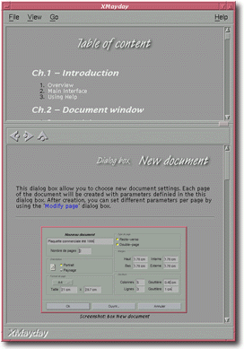

<!-- Documentation XMayday (c)1996-2000 AXENE contact axene@axene.org>
<html>

<head>
<title>General Interface</title>
</head>

<body BGCOLOR="#FFFFFF" BACKGROUND="Images/back.gif" TEXT="#000000">

<p ALIGN="right"> </p>

<p><br>
<br>
XMayday's general interface is its main window. All windows possess the same general
interface when several are opened using the '<a HREF="Menu_Bar.html#file">File</a> / <a HREF="Menu_Bar.html#new_menu_entry">New window</a>' option. <br>
<br>
</p>

<hr>

<p align="center"><br>
 <br>
<small><i>Screen shot: General Interface. </i></small></p>

<p><br>
</p>

<hr>

<p><br>
</p>

<h3>XMayday's General Interface is composed of the following elements:</h3>

<ul>
  <li><a NAME="menu_bar"></a><a HREF="Menu_Bar.html">the Menu bar</a>. <br>
    &nbsp;</li>
  <li><a NAME="index_section">the Index section. This section <b>displays a documentation's
    Index page</b>. This section may be hidden if no Index page has been chosen or if the page
    was hidden using the '</a><a HREF="Menu_Bar.html#file">File</a> / <a HREF="Menu_Bar.html#view_index_menu_entry">Hide Index</a>' option. Clicking on a hypertext
    link on the Index page changes the browser's html page. When the Index is displayed, a
    rectangular button at the bottom right of the section allows the user to vertically resize
    the Index section. <br>
    &nbsp;</li>
  <li><a NAME="browse_section">the Browser portion. This section <b>displays the requested
    documentation page</b>. All the pages successively displayed in this section are kept in
    the log of the current XMayday window.</a><p align="center"> </p>
    <p>The toolbar provides access to HTML pages in the log. The three icons have the
    following functions: <ul>
      <li> <a NAME="icon_prev">The first button <b>moves the
        browser back a page</b> in the log to the page read and displayed just before the current
        browser-page. </a><br>
        &nbsp;</li>
      <li> <a NAME="icon_next">The second button <b>moves the
        browser to the next page</b> of the log, the page read and displayed just after the
        current browser-page. </a><br>
        &nbsp;</li>
      <li> <a NAME="icon_home">The last button <b>accesses the
        first page</b> kept in the log. </a><br>
        &nbsp;</li>
    </ul>
  </li>
  <li><a NAME="bottom_bar">The horizontal information bar displays <b>brief help about a
    button</b> when the cursor is over that button; it also displays the <b>page-name</b>
    indicated by a link when the cursor is positioned over that link. </a></li>
</ul>

<p><br>
</p>

<hr>

<p ALIGN="right"></p>
</body>
</html>
